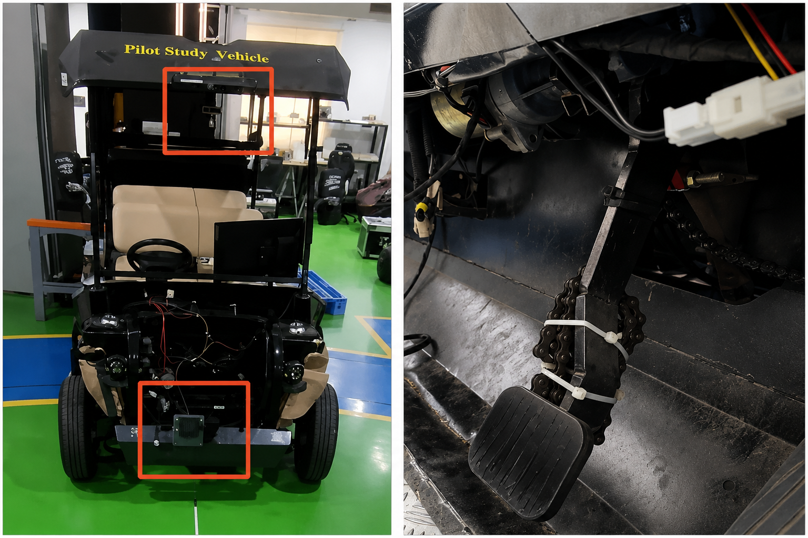
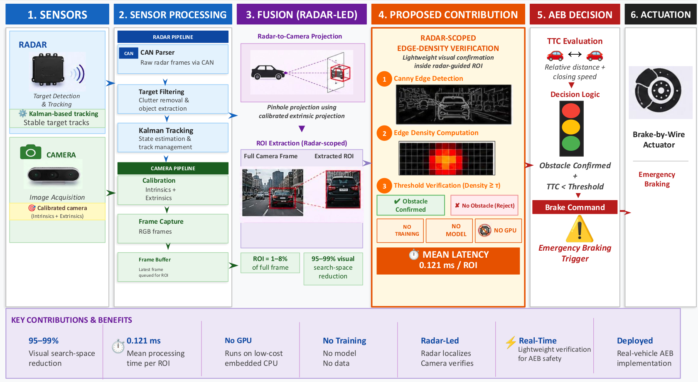
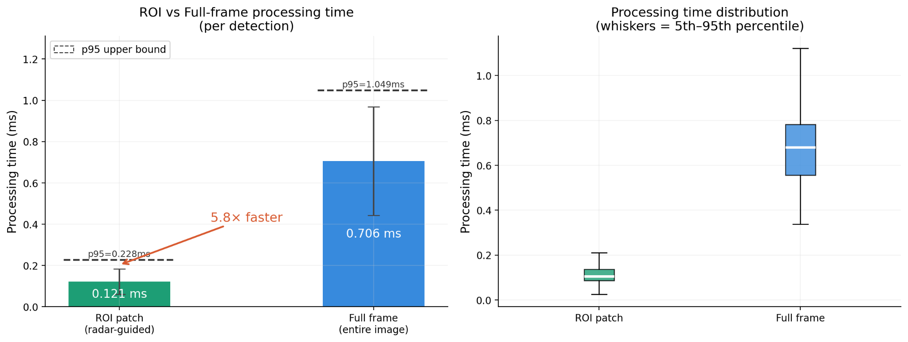
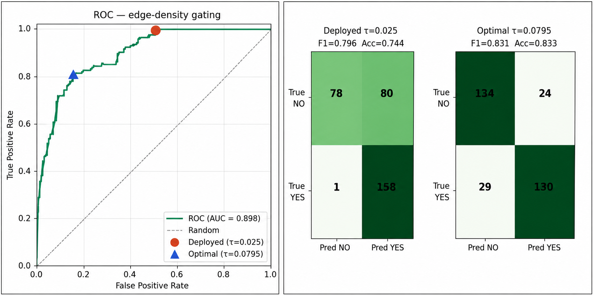

Radar-Guided Camera Verification for Automatic Emergency Braking：重新定义雷达-相机融合中的“检测”问题
一句话总结
本文将 AEB 中的相机任务从通用目标检测改写为雷达定位后的障碍物存在性验证，用雷达引导 ROI 内的 Canny 边缘密度门控，在真实车辆上实现低延迟、高召回、无需训练和无需 GPU 的制动验证链路。
1. 研究背景与动机
自动紧急制动（Automatic Emergency Braking, AEB）的核心目标不是完整理解交通场景，而是在碰撞风险窗口内及时、可靠地判断是否需要制动。传统雷达-相机融合系统之所以被广泛采用，是因为雷达提供距离和相对速度，相机提供视觉确认；论文在摘要与引言中明确指出这一组合是现代 AEB 的常见感知架构（见 PAGE 1）。
现有融合系统通常把相机端设计为语义目标检测器：给定整帧图像，检测器要在图像中寻找目标、回归框、识别类别，并输出置信度。论文将 CenterFusion、特征级融合方法、CR3DT 等归入这一范式：这些工作主要追求更强的 3D 检测或跟踪性能，但相机侧仍依赖学习模型完成目标识别和场景理解（见 PAGE 1–3）。
本文的关键动机来自任务分解：在雷达主导的 AEB 链路中，目标定位并不一定需要由相机完成。雷达已经检测、跟踪并定位前方目标，随后系统只需把雷达轨迹投影到图像平面。此时，相机不再需要搜索整张图像，而只需在雷达给出的局部区域内回答一个二值问题：那里是否确实存在障碍物（见 PAGE 1–3）。
这一问题改写直接改变了计算负担。通用检测器为了覆盖开放场景，必须处理大量与当前制动决策无关的像素、类别和候选框；本文方法只处理雷达投影出的 ROI。论文报告 ROI 在 8 m 处占整帧 4.3%，在 25 m 处只占 1.3%，对应 95.7% 到 98.7% 的视觉搜索空间压缩（见 PAGE 3–4）。
论文的论点不是“目标检测无用”，而是“在雷达已经完成定位、AEB 只关心是否应刹车时，完整检测可能不是必要的最低复杂度解”。作者用非常小的相机阶段替代检测器：灰度化、Canny 边缘提取、边缘密度统计、阈值判定。论文原文将相机角色概括为从“detector to verifier”，这个短语很好地概括了本文方法论转向（见 PAGE 1–2）。
| 维度 | 典型检测式雷达-相机融合 | 本文雷达引导验证 | 证据 |
|---|---|---|---|
| 相机任务 | 整帧目标定位与类别识别 | 雷达 ROI 内障碍物存在性验证 | PAGE 1–3 |
| 学习依赖 | 通常依赖深度模型、训练数据、权重 | 无训练数据、无模型权重、部署端无需 GPU | PAGE 1, PAGE 3 |
| 系统目标 | 提升通用检测或 3D 感知性能 | 满足 AEB 制动确认的实时性与高召回 | PAGE 4–7 |
| 端到端验证 | 论文表 I 中多项相关工作未报告端到端 AEB | 真实车、制动执行器、33 个威胁场景 | PAGE 3, PAGE 5 |
2. 预备知识：AEB 中的“检测”与“验证”
在通用自动驾驶感知中，“检测”通常意味着从图像或多模态输入中同时完成定位和语义识别。例如检测器需要输出行人、车辆、自行车等类别，以及对应边界框。该目标适合开放场景理解，但其复杂度也来自开放性：模型需要学习类别外观、多尺度变化、遮挡、光照和背景干扰。
AEB 的任务约束更窄。若雷达已经给出目标距离 $r$、相对速度 $v_r$ 和近似方位，制动逻辑更关心目标是否在碰撞路径内、时间到碰撞是否足够短、视觉上是否存在实体障碍物。换言之，相机的最低必要输出可以从多类别检测结果退化为一个门控信号：通过或不通过。
本文使用的边缘密度不是新视觉特征。Canny 边缘检测是经典方法，计算图像灰度梯度、非极大值抑制和双阈值连接边缘。本文的新意不在于发明边缘算子，而在于把经典特征放入雷达限定的 ROI，使本来容易被全帧背景干扰的弱特征变成 AEB 任务中可用的二值验证信号（见 PAGE 3）。
3. 方法详解
flowchart TB
RAD[Radar detect and track] --> KF[Kalman tracker]
KF --> PROJ[Project track to image]
PROJ --> ROI[Extract radar guided ROI]
ROI --> EDGE[Canny edge map]
EDGE --> DENS[Edge density score]
DENS --> GATE[Threshold gate]
GATE --> TTC[TTC logic]
TTC --> BBW[Brake by wire actuation]
3.1 系统平台与总体架构
系统部署在一辆仪表化高尔夫车上，传感器包括 Continental ARS408-21 汽车雷达、Intel RealSense D435 相机，以及链轮链条式 brake-by-wire 制动执行器。作者对相机内参与雷达到相机外参进行标定，从而把雷达轨迹投影到图像平面，裁剪 ROI 并进行视觉验证（见 PAGE 2）。

Fig. 2 给出系统数据流：雷达首先检测和跟踪潜在障碍物，估计距离与速度；雷达轨迹被投影到相机图像后提取小 ROI；边缘密度门控在 ROI 内确认障碍物存在；最后与雷达导出的 TTC 共同触发制动执行器（见 PAGE 2–3）。这一路径体现了本文的核心假设：视觉只服务于雷达目标确认，而不是替代雷达重新完成全局搜索。

3.2 雷达处理与 Kalman 跟踪
ARS408 雷达检测通过 CAN 发送，并在帧级解析。预过滤器只保留前向 0–25 m 范围、雷达散射截面积（RCS）高于 -20 dBsm 的目标；速度相近的邻近检测会进行质心合并，以处理同一物理物体产生多个雷达回波的问题。合并后的检测输入常速度 Kalman 跟踪器（见 PAGE 2–3）。
论文给出的跟踪状态为：
$$x_k = [x\ y\ v_x\ v_y]^T \tag{1}$$
这里 $x_k$ 表示第 $k$ 个时刻的目标状态，$x,y$ 是平面位置，$v_x,v_y$ 是对应方向速度。人话解释：系统并不依赖相机估计运动，而是让雷达-跟踪器维护“目标在哪里、正在怎样移动”的低维状态（见 PAGE 3）。
为了抑制雷达虚警，论文要求轨迹连续出现在三次雷达更新中才晋升为 confirmed track，并提供可选速度门控以滤除远离自车的轨迹（见 PAGE 3）。这一步对后续相机门控非常重要：如果输入 ROI 本身来自大量雷达鬼影，那么再轻量的视觉验证也会被迫处理错误候选。
3.3 相机-雷达投影与 ROI 提取
每个确认后的雷达轨迹通过标准针孔模型投影到图像平面：
$$s \begin{bmatrix} u \\ v \\ 1 \end{bmatrix} = K[R|t] \begin{bmatrix} x \\ y \\ z \\ 1 \end{bmatrix} \tag{2}$$
其中 $K$ 是相机内参矩阵，$[R|t]$ 是雷达到相机坐标变换，$s$ 是尺度因子，$(u,v)$ 是图像像素坐标。人话解释：公式 (2) 把雷达空间中的目标位置变成图像上的一个位置区域，后续视觉只需围绕该位置裁剪小窗口（见 PAGE 3）。
论文设定 $z$ 从 0 到 2.2 m，并将投影像素包围为轴对齐边界框，再加入 22 px padding。作者报告该 ROI 在 8 m 处约为整帧 4.3%，在 25 m 处缩小到 1.3%（见 PAGE 3–4）。这不是单纯的工程微优化，而是将感知问题从全帧搜索转变为雷达条件下的小区域验证。
3.4 边缘密度门控
给定尺寸为 $h \times w$ 的 ROI patch $P$，系统先转为灰度图，然后使用固定阈值 Canny：low = 40, high = 120。随后统计边缘像素占 ROI 总像素的比例：
$$d(P)=\frac{1}{h\cdot w}\sum_{u,v}\mathbf{1}[E(P)(u,v)>0] \tag{3}$$
其中 $E(P)$ 是 ROI 的二值 Canny 边缘图，$\mathbf{1}[\cdot]$ 是指示函数，条件为真时取 1。人话解释：公式 (3) 把 ROI 内“有多少像素看起来像物体边界”压缩成一个标量 $d(P)$；如果这个标量足够大，系统认为雷达指向的位置存在可见障碍物（见 PAGE 3）。
部署阈值为 $\tau=0.025$，即至少 2.5% 的 ROI 像素必须为边缘，门控才通过。论文强调该相机阶段没有训练流水线、没有模型权重，也不需要部署端 GPU；原文短语 “requires no training data” 是其工程主张的核心之一（见 PAGE 1, PAGE 3）。
为什么边缘密度在这里能工作？因为雷达已经把搜索空间限制到目标附近。若在整帧图像上使用边缘密度，路面纹理、树影、建筑边缘都会带来大量干扰；但在雷达 ROI 内，问题变成“雷达说这里有东西，图像这里是否也出现足够结构”。这使一个非常粗糙的视觉统计量具有任务相关性。
3.5 TTC 与制动决策
论文用雷达距离 $r$ 和相对速度 $v_r$ 计算 time-to-collision，并引入 1.0 s 的有效 TTC 偏移：
$$TTC=\frac{r}{|v_r|},\quad TTC_{eff}=TTC-1.0\ \mathrm{s} \tag{4}$$
这里 $TTC$ 表示按当前相对速度估计的碰撞剩余时间，$TTC_{eff}$ 则在此基础上扣除 1 秒安全裕量。人话解释：即便视觉确认通过，系统也不是立即刹车，而是结合雷达速度与距离判断碰撞时间是否进入制动窗口（见 PAGE 3–4）。
最终制动条件为：
$$brake=1\ \mathrm{iff}\ d(P)\ge\tau\land r\in[3,25]\ \mathrm{m}\land TTC_{eff}<2.5\ \mathrm{s} \tag{5}$$
公式 (5) 把视觉门控、距离范围和时间风险三个条件合取。人话解释：只有当 ROI 边缘密度超过阈值、目标位于 3–25 m 工作距离内、且有效碰撞时间小于 2.5 s 时，系统才向制动执行器发送命令（见 PAGE 4）。
3.6 与检测器式融合的本质差异
本文方法的核心创新可以分成三点。第一，任务重定义：相机从目标检测器变成雷达定位后的二值验证器。第二，计算域收缩：相机只处理雷达投影 ROI，而不是整帧图像。第三，安全偏置：阈值选择优先召回而非精度，这与 AEB 中漏刹成本高于误刹成本的任务属性一致（见 PAGE 4–5）。
| 创新点 | 解决的问题 | 具体做法 | 为什么有效 | 证据 |
|---|---|---|---|---|
| 检测转验证 | 检测器承担定位与识别双重任务，计算复杂 | 雷达先定位，相机只判断 ROI 中是否有障碍物 | AEB 决策主要需要障碍物存在性和 TTC，不必总是需要类别标签 | PAGE 1–3 |
| 雷达引导 ROI | 整帧处理浪费大量无关像素 | 用投影模型裁剪雷达目标区域，加入 22 px padding | ROI 仅占整帧 1.3%–4.3% 的典型远近距离示例，显著降低延迟 | PAGE 3–4 |
| 边缘密度门控 | 深度检测模型需要训练、权重和硬件资源 | Canny 边缘图上统计 $d(P)$ 并与 $\tau$ 比较 | 真实障碍物在小 ROI 内通常产生足够边缘结构，空路面和天空较少通过 | PAGE 3–5 |
3.7 代码分析状态
本文未提供可确认的公开代码。论文元信息中 code_url 与 project_url 为空，全文 PAGE 1–8 也没有列出 GitHub、项目主页或可下载实现地址。因此，本报告不伪造源码路径、函数名或代码段。能够从论文确认的实现信息仅包括：当前实现使用 Python 与 OpenCV，作者认为进一步优化实现可能带来额外性能收益（见 PAGE 6）。
4. 实验分析
4.1 延迟实验：ROI 处理是否真的带来数量级收益？
延迟实验比较两种 Canny 处理方式：只处理雷达引导 ROI，以及处理完整 $848\times480$ 图像。所有测试在同一台无 GPU 加速的笔记本上进行，数据来自 72 个驾驶 session、49,988 帧，并收集 41,452 个 ROI timing samples（见 PAGE 4）。

| 指标 | ROI Patch | Full Frame | 改进 | 证据 |
|---|---|---|---|---|
| 平均延迟 | 0.121 ms | 0.706 ms | 5.8× faster | Table II, PAGE 4 |
| 标准差 | 0.061 ms | 0.263 ms | 证据不足：论文未给倍率 | Table II, PAGE 4 |
| p95 延迟 | 0.228 ms | 1.049 ms | 4.6× lower | Table II, PAGE 4 |
| 8 m 像素占比 | 4.3% | 100% | 95.7% reduction | Table II, PAGE 4 |
| 25 m 像素占比 | 1.3% | 100% | 98.7% reduction | Table II, PAGE 4 |
这组结果说明，本文方法的低延迟不是来自某个复杂优化技巧，而是来自问题规模削减。Canny 在整帧上本来已经不算昂贵，但 ROI 版本仍能把均值压到 0.121 ms。对 AEB 而言，p95 延迟比均值更有意义，因为制动链路关心尾部时延；0.228 ms 的 p95 表明相机验证阶段在该平台上几乎不会成为系统瓶颈（见 PAGE 4）。
4.2 门控质量：高召回阈值与精度代价
门控质量评估并不是在全部 60,492 个 ROI 上人工标注完成。论文说明先离线计算所有 72 个 session 的雷达投影 ROI 边缘密度，再按四个密度区间分层采样 320 帧，其中至少 50% 来自受控场景 session；第一作者标注 YES/NO，排除 3 个歧义样本后留下 317 个标签，包括 159 个 YES 和 158 个 NO（见 PAGE 4）。

| 指标 | 部署阈值 $\tau=0.025$ | Youden 最优 $\tau=0.080$ | 解读 | 证据 |
|---|---|---|---|---|
| TP / FP / TN / FN | 158 / 80 / 78 / 1 | 130 / 24 / 134 / 29 | 部署阈值几乎不漏检，但误确认较多 | Table III, PAGE 4 |
| Precision | 0.664 | 0.844 | 提高阈值显著减少 false positives | Table III, PAGE 4 |
| Recall | 0.994 | 0.818 | AEB 部署点牺牲精度换召回 | Table III, PAGE 4 |
| F1 Score | 0.796 | 0.831 | 若按分类平衡指标，0.080 更优 | Table III, PAGE 4 |
| AUC | 0.898 | 0.898 | AUC 与阈值无关，反映排序能力 | Table III, Fig. 4, PAGE 4–5 |
这一结果是全文最值得仔细读的部分。若目标是一般二分类，$\tau=0.080$ 的 F1 和精度更漂亮；但 AEB 的安全代价函数不对称，漏掉真实障碍物比多触发一次警告或制动更严重。作者选择 $\tau=0.025$，对应 159 个正样本中仅漏掉 1 个，原文结果是 “recorded zero missed brake events” 在完整 33 个 staged threat 场景中成立（见 PAGE 1, PAGE 5）。
| 阈值 | Precision | Recall | F1 | 论文备注 | 证据 |
|---|---|---|---|---|---|
| 0.010 | 0.526 | 1.000 | 0.690 | Too permissive | Table IV, PAGE 4 |
| 0.025 | 0.664 | 0.994 | 0.796 | Deployed — AEB-safe | Table IV, PAGE 4 |
| 0.050 | 0.829 | 0.824 | 0.826 | Balanced operation | Table IV, PAGE 4 |
| 0.080 | 0.844 | 0.818 | 0.831 | Youden-optimal | Table IV, PAGE 4 |
| 0.150 | 0.937 | 0.465 | 0.622 | Unsafe — too many misses | Table IV, PAGE 4 |
阈值敏感性表明，边缘密度门控存在清晰的安全-误报权衡。$\tau$ 从 0.025 增至 0.080 时，precision 从 0.664 提升到 0.844，但 recall 从 0.994 降到 0.818；继续增至 0.150 时，precision 达到 0.937，recall 却跌至 0.465。对 AEB 来说，后者意味着大量真实障碍物不通过视觉确认，因此论文将其标为 unsafe（见 PAGE 4）。
4.3 光照分层：低光下的精度问题
| 条件 | n | Precision | Recall | F1 | 主要含义 | 证据 |
|---|---|---|---|---|---|---|
| Controlled daytime | 99 | 0.768 | 1.000 | 0.869 | 受控白天场景效果稳定 | Table V, PAGE 5 |
| Daytime naturalistic | 126 | 0.779 | 0.988 | 0.871 | 自然白天接近受控场景 | Table V, PAGE 5 |
| Evening / low-light | 92 | 0.269 | 1.000 | 0.424 | 低光召回保持，但误确认显著增加 | Table V, PAGE 5 |
| All sessions combined | 317 | 0.664 | 0.994 | 0.796 | 总体体现高召回部署策略 | Table V, PAGE 5 |
光照分层结果揭示本文方法的主要脆弱点：固定边缘阈值在夜间或低光环境中容易被街灯、反射面和高对比噪声诱发 false confirmations。论文报告 evening / low-light precision 只有 0.269，而 recall 仍为 1.000（见 PAGE 5）。这说明该门控在低光下仍倾向于“不漏过”，但误报代价会明显上升。
从工程角度看，这一结果并不否定方法本身，而是提示部署阈值不能只看总体 AUC。若目标平台更重视乘坐舒适性和误刹抑制，固定 $\tau=0.025$ 可能过于保守；若目标平台是低速园区车、矿区车或封闭测试场景，高召回策略可能是可接受的。论文没有提供自适应阈值或光照感知门控，因此这部分仍属于未来工作空间（见 PAGE 6）。
4.4 AEB 行为实验：算法是否能驱动真实制动链路？
行为评估包含 33 个 threat scenarios 和 3 个 no-threat scenarios。威胁场景覆盖静止障碍物、行人、自行车、横穿行人、不同 closing velocity，以及行人从停放车辆后出现、多目标场景等；车速在 20 km/h 到 30 km/h 之间。作者说明这些 staged scenarios 参考 Euro NCAP AEB Car-to-Car Test Protocol 设计（见 PAGE 5）。
| 场景类别 | 结果 | 解读 | 证据 |
|---|---|---|---|
| 33 个 staged threat sessions | Brake recall = 1.000；zero missed brakes | 在设计的威胁场景中没有漏刹，是本文最强的系统级证据 | PAGE 5, Fig. 7 PAGE 7 |
| 3 个 no-threat sessions | 全部发生 brake event；strict FAR = 1.000 | 高召回阈值带来明显误触发代价 | PAGE 5, Fig. 7 PAGE 7 |
| 33 个 naturalistic sessions | 29 个触发制动；人工复核均为 in-corridor obstacle | 自然场景中触发事件并非纯随机误报，但仍需更多负样本验证 | PAGE 5, Fig. 7 PAGE 7 |
| 4 个未触发 naturalistic sessions | 记录窗口内无 qualifying close-range obstacles | 论文认为未触发符合场景事实 | PAGE 5, Fig. 7 PAGE 7 |
系统级结果支持作者的核心主张：对于雷达已经定位的 AEB 链路，轻量视觉验证可以支撑制动决策。然而，no-threat 的 FAR = 1.000 同样必须被严肃对待。论文将其解释为部署阈值偏向高召回的一致后果，并指出提高 $\tau$ 到 0.080 预计可减少 false triggers，但会牺牲召回（见 PAGE 5）。这意味着最终阈值不是单纯算法最优，而是产品安全策略选择。
5. 讨论：适用边界与工程价值
本文的适用边界首先由“雷达主导”决定。若系统没有可靠雷达定位，或者雷达目标投影不准，相机 ROI 验证就会失去前提。论文也承认雷达-相机标定精度是当前最大限制之一，短距离处小投影误差更容易影响 ROI 放置（见 PAGE 6）。因此，该方法不是通用视觉检测器的替代品，而是雷达条件充分时的 AEB 验证模块。
其次，本文不输出类别标签。对于 AEB 来说，障碍物是否存在通常比“它是什么”更直接；但对于行为预测、责任归因、场景语义理解、道路弱势参与者分类等任务，仅有边缘密度不足以满足需求。论文结论也强调，并不是所有感知系统都应更简单，而是任务需求应驱动解决方案复杂度（见 PAGE 7）。
从业务价值看，该方法适合资源受限且已有雷达先验的低成本 AEB 或前处理链路。它可以作为候选框验证、误检过滤或制动前确认模块，尤其适用于嵌入式算力有限、GPU 不可用、模型维护成本敏感的车辆平台。论文中“无需训练数据、模型权重或 GPU”的主张，正对应这类部署约束（见 PAGE 1, PAGE 6）。
与深度检测器相比，本文方法的优势是确定性、可解释和低延迟；劣势是表达能力有限、对标定与光照敏感、难以处理细粒度语义和复杂背景。更稳妥的工程路线可能不是完全替代检测器，而是在雷达确认强、TTC 紧张、算力受限的场景中把该门控作为快速安全通道，或作为深度检测器前的低成本筛选器。论文没有验证这种混合架构，因此这里只能作为基于结果的工程推断。
6. 局限分析
作者自述局限一：标定误差。论文明确指出当前系统最大的限制是 radar-camera calibration accuracy，小投影误差在短距离更明显，并会影响 ROI placement（见 PAGE 6）。这对本文方法尤其关键，因为 ROI 很小；搜索空间越小，计算越省，但对投影准确性的容忍度也越低。
作者自述局限二：标注与平台规模。数据集由单一标注者标注，作者认为更大的多标注者研究有助于测量 annotation consistency。实验也只在一辆配置好的车辆平台上完成，需要跨车辆、环境和光照进一步测试（见 PAGE 6）。这意味着当前结果更像强工程原型验证，而不是足以覆盖量产 ODD 的统计证据。
作者自述局限三：低光精度下降与固定阈值。论文指出 evening operation 中 precision 下降，说明固定 edge-density threshold 并不适合所有光照条件；未来工作将关注提高标定精度和对变化光照的鲁棒性（见 PAGE 6）。Table V 的 0.269 precision 是这项局限的直接量化证据（见 PAGE 5）。
独立判断一：no-threat 样本过少且误报严重。3 个 no-threat sessions 全部触发制动，strict FAR = 1.000（见 PAGE 5, PAGE 7）。虽然样本数很小，不能估计真实误报率，但它暴露了部署阈值的产品风险。AEB 误刹不仅影响舒适性，还可能带来后车追尾风险；论文没有提供误刹严重度、制动曲线或乘坐体验分析，因此系统安全收益与误刹代价仍需更完整评估。
独立判断二：门控评估标签规模有限。论文离线计算了 60,492 个 ROI，但人工评估只使用 317 个标签（见 PAGE 4）。分层采样有助于覆盖不同密度区间，但对于低频困难样本，如反光路牌、雨夜、强逆光、非刚体遮挡、雷达多径和复杂施工场景，317 个样本不足以说明泛化能力。当前 AUC = 0.898 是有价值的初步证据，但不能替代大规模外部验证。
独立判断三：缺少可确认公开代码削弱复现。论文算法描述足够简单，但系统成败可能取决于工程细节，例如时间同步、雷达 CAN 解析、外参标定、ROI 边界裁剪、制动执行器延迟、线程调度和异常处理。由于本文未提供可确认的公开代码，外部团队无法直接审计这些细节，也无法确认报告延迟是否包含完整端到端相机处理开销。
7. 结论
本文贡献不在于提出更强的目标检测网络，而在于把 AEB 雷达-相机融合中的视觉问题重新定义为雷达条件下的存在性验证。通过公式 (2) 的雷达-相机投影、公式 (3) 的边缘密度门控，以及公式 (5) 的 TTC 制动条件，作者构建了一个无需训练、无需模型权重、部署端无需 GPU 的完整 AEB 链路，并在真实车辆上展示了亚毫秒相机验证延迟和 staged threat 场景零漏刹结果（见 PAGE 1–7）。
同时，这项工作不应被解读为“经典边缘特征可以替代所有检测器”。更准确的结论是：当雷达已经提供可靠定位，而任务只要求快速确认碰撞路径中是否有障碍物时，轻量验证可能比通用检测更符合 AEB 的最低必要复杂度。后续研究需要重点补齐跨平台验证、低光自适应阈值、误刹风险评估、多标注者数据和公开实现。
8. 证据索引
| 关键结论 / 数据 | PAGE 证据 |
|---|---|
| 论文提出 radar-scoped edge-density gate，用于 radar-guided ROI 内障碍物验证，而非完整目标检测。 | PAGE 1 |
| 方法无需训练数据、模型权重或 GPU；评估覆盖 72 个驾驶 sessions 和 131,603 camera frames。 | PAGE 1 |
| 真实车辆平台包括 ARS408-21 雷达、RealSense D435 相机和 chain-sprocket brake-by-wire actuator；Fig. 1 展示平台。 | PAGE 2 |
| 系统架构为雷达检测跟踪、投影到相机、ROI 内边缘密度验证、结合 TTC 触发制动；Fig. 2 展示流程。 | PAGE 2–3 |
| Kalman 状态公式 $x_k=[x\ y\ v_x\ v_y]^T$，轨迹需连续三次雷达更新才 confirmed。 | PAGE 3 |
| 投影公式 $s[u,v,1]^T=K[R|t][x,y,z,1]^T$，$z$ 从 0 到 2.2 m，ROI 加 22 px padding。 | PAGE 3 |
| 边缘密度公式 $d(P)=\frac{1}{h w}\sum_{u,v}\mathbf{1}[E(P)(u,v)>0]$；Canny low=40, high=120；部署阈值 $\tau=0.025$。 | PAGE 3 |
| TTC 公式与制动条件：$TTC=r/|v_r|$，$TTC_{eff}=TTC-1.0s$，$d(P)\ge\tau \land r\in[3,25]m \land TTC_{eff}<2.5s$。 | PAGE 3–4 |
| ROI 平均延迟 0.121 ms，整帧 0.706 ms；p95 分别为 0.228 ms 与 1.049 ms；Fig. 3 和 Table II。 | PAGE 4 |
| ROI 在 8 m 处占 4.3% 全帧，在 25 m 处占 1.3%，对应 95.7% 与 98.7% 搜索空间压缩。 | PAGE 4 |
| 门控评估：60,492 个 ROI 中分层采样 320 帧，排除 3 个歧义样本，得到 317 个标签。 | PAGE 4 |
| AUC = 0.898；部署阈值 $\tau=0.025$ 时 precision=0.664、recall=0.994、F1=0.796；Youden 阈值 $\tau=0.080$ 时 F1=0.831。 | PAGE 4–5 |
| 光照分层：低光 precision=0.269、recall=1.000；作者指出街灯和反射面增加 false confirmations。 | PAGE 5 |
| AEB 行为评估：33 个 threat scenarios 中 brake recall=1.000，zero missed brakes；3 个 no-threat sessions 全部触发制动，strict FAR=1.000。 | PAGE 5, PAGE 7 |
| 作者自述局限：标定精度、单标注者、单车辆平台、低光 precision 下降、固定阈值、Python/OpenCV 实现仍可优化。 | PAGE 6 |
| 结论强调任务需求应驱动解决方案复杂度，AEB 优先及时可靠制动，而非所有应用都应简化感知系统。 | PAGE 7 |
| 代码状态：论文元信息无 code_url/project_url，全文 PAGE 1–8 未提供可确认公开仓库；本文未提供可确认的公开代码。 | PAGE 1–8 |